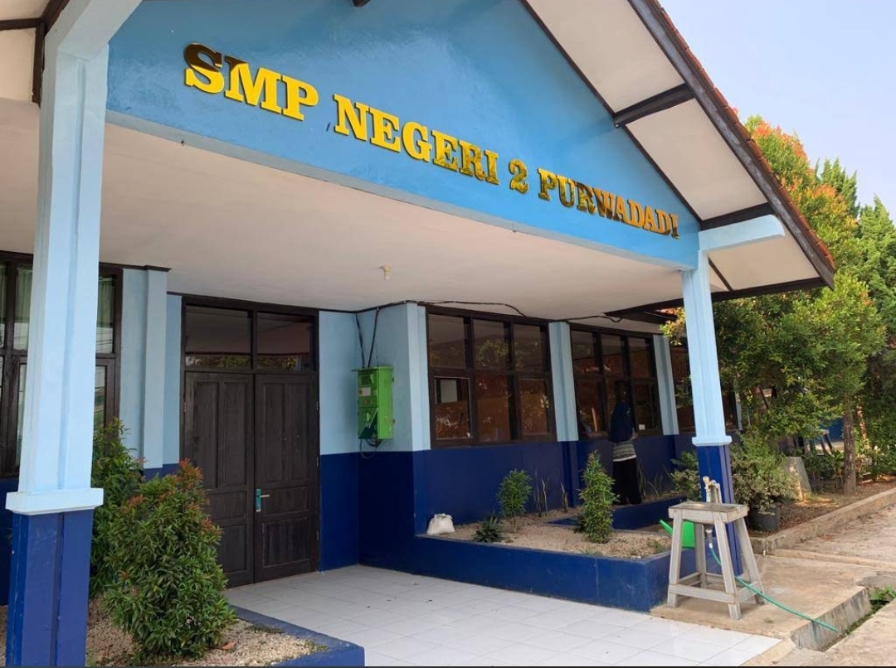
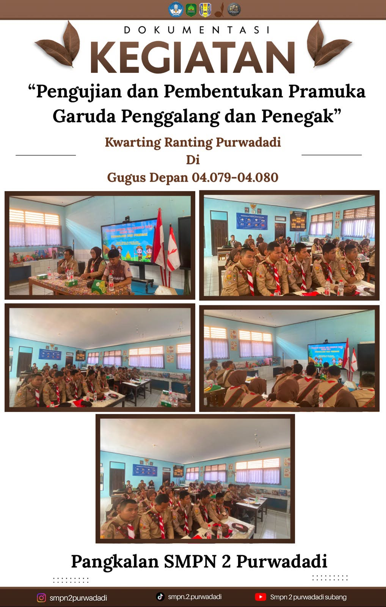
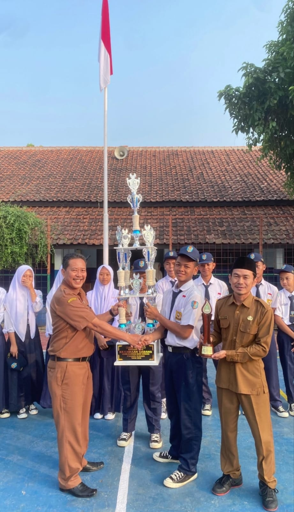
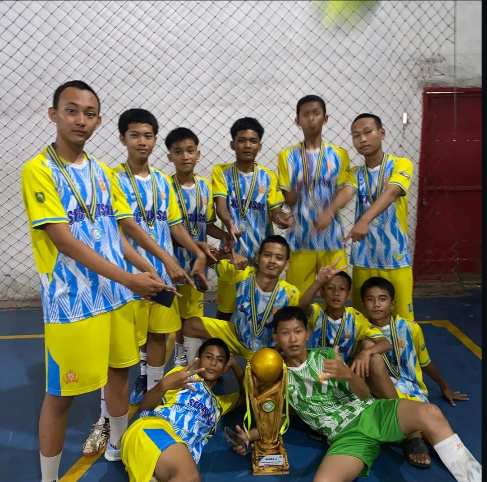
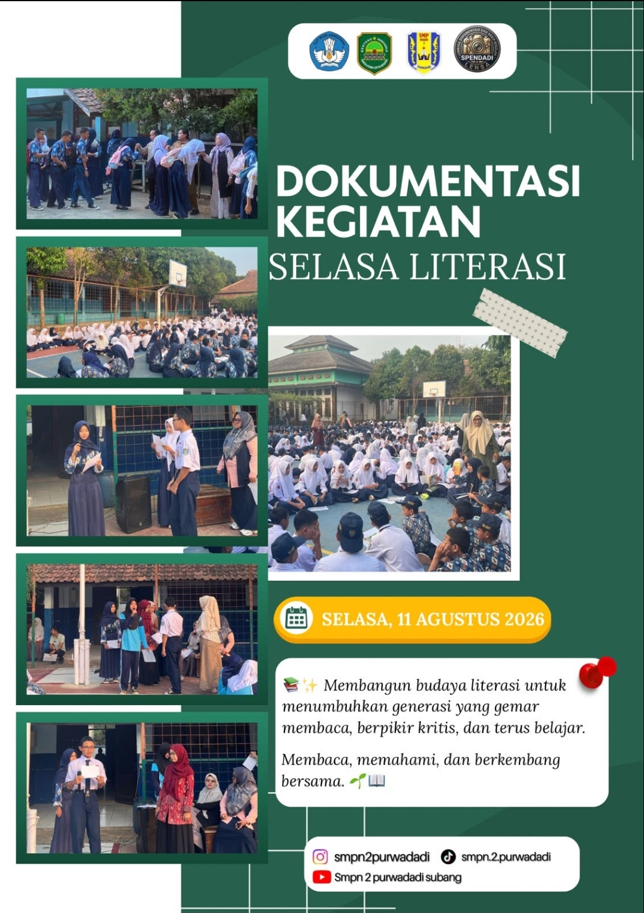

Pembelajaran Aktif
Belajar dengan pendekatan yang kreatif, interaktif, dan relevan dengan kebutuhan zaman.
Membangun Karakter, Mencetak Prestasi
SMP Negeri 2 Purwadadi adalah sekolah yang menanamkan semangat belajar, kedisiplinan, dan kreativitas dalam setiap kegiatan. Di sini, siswa dibimbing untuk berkembang secara akademik, spiritual, dan sosial dalam lingkungan yang kondusif.


Profil Sekolah
SMP Negeri 2 Purwadadi hadir sebagai lembaga pendidikan yang mengedepankan kualitas pembelajaran, pembinaan karakter, dan penguatan kompetensi siswa. Kami percaya bahwa pendidikan yang baik adalah pendidikan yang mampu menyiapkan siswa menjadi pribadi yang cerdas, berakhlak mulia, dan siap memberi manfaat bagi lingkungan sekitar.
Belajar dengan pendekatan yang kreatif, interaktif, dan relevan dengan kebutuhan zaman.
Kedisiplinan, tanggung jawab, dan sopan santun menjadi bagian dari keseharian siswa.
Semangat meraih prestasi kami tumbuhkan melalui kegiatan akademik dan non-akademik.
Visi & Misi
Menjadi lembaga pendidikan yang unggul dalam prestasi akademik, berakhlak mulia, dan berdaya saing di era global.
Menyelenggarakan pembelajaran yang berkualitas, menumbuhkan nilai karakter, mengembangkan bakat siswa, serta membangun lingkungan sekolah yang sehat dan kondusif.
Fasilitas
Ruang praktikum IPA yang mendukung eksperimen, pengamatan, dan pemahaman konsep ilmiah.
Tempat membaca, menelusuri ilmu, dan menumbuhkan literasi siswa secara mandiri.
Fasilitas digital untuk penguatan literasi teknologi dan kompetensi abad 21.
Lapangan dan alat pendukung kegiatan fisik untuk menjaga kesehatan dan semangat sportivitas.
Prestasi



Kegiatan Sekolah
Membuat siswa menambah pengetahuan melalui kegiatan literasi yang menarik.
Lihat kegiatanKegiatan membaca dan menghafal Al-Qur'an untuk meningkatkan kecintaan dan hafalan siswa.
Lihat kegiatanMenumbuhkan kemampuan matematika siswa melalui latihan rutin.
Lihat kegiatanBerbagai pilihan cabang olahraga hadir untuk menumbuhkan semangat sehat dan kompetitif.
Lihat kegiatanPrestasi di bidang akademik dan kreativitas menjadi bukti komitmen sekolah terhadap kualitas.
Lihat kegiatanMari Bergabung